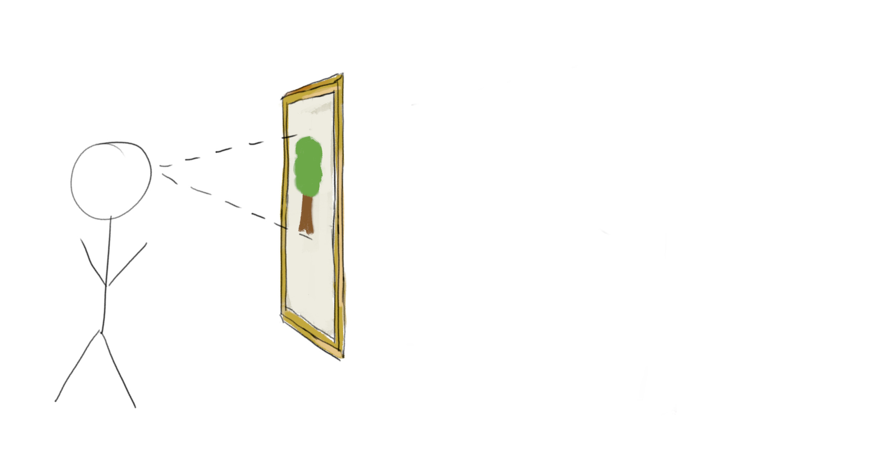
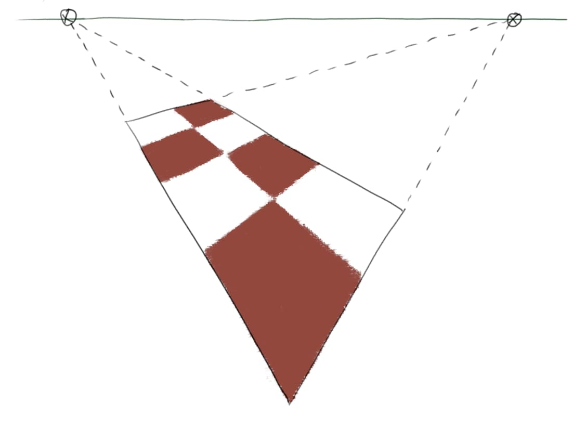

I’ve just started reading Ernest W. Watson’s Creative Perspective for Artists and Illustrators. I found that it cleared up several confusions I had about how perspective works, why correct perspective can seem distorted, and when and in what ways you might want to bend the rules.
I’ll follow Watson’s convention and refer to scientific perspective when I want to emphasise the idea of sticking precisely to the standard rules.
What is perspective?
Stand in front of a window, and (keeping your head still and closing one eye) use a marker to trace what you see on the window. Then the resulting 2-dimensional picture will be in scientific perspective. The resulting image will match the image captured by an idealised camera.

This shows us the precise sense in which scientific perspective is “correct” – if you replace the window with a really good perspective painting, keep your head in exactly the same place and keep one eye closed, you won’t be able to tell the difference.

But we often want to show dramatic perspective without painting on a wall-sized canvas and insisting that it be viewed from exactly the right spot! A small print or an image on a computer screen is never going to fill your field of vision. And in this scenario it’s less clear whether scientific perspective is best.
Perspective distortion
Human vision is very different from a camera. We see very little detail away from the centre of our retina, and so our eyes dart around while our brain fools us into thinking we are seeing a single sharp image. Moreover our internal experience is more like viewing an image on a hemisphere than on a flat screen. In particular angles do not appear to change if you move your eyes while keeping your head still, whereas the angles measured on a camera image change as you rotate the camera.
This is why extreme perspective can appear distorted. For example, in the below diagram of a rectangle in perspective the corner nearest to the viewer makes an acute angle, while in real life we always perceive the near corner of a rectangle to make an obtuse angle.

If you zoom in on the diagram and put your eye quite close to the centre of the horizon line then you’ll see an undistorted rectangle, with the near corner appearing obtuse from your point of view. But when viewed normally it’s the angle as measured on the screen that matters, and this acute angle doesn’t match your experience of rectangles in real life.
That is not to say that this image is wrong, though. It’s impossible to perfectly match the experience of dramatic perspective in a small image, preserving both angles and straight lines, just as it’s impossible to make a flat map that accurately represents the surface of the Earth. And scientific perspective does succeed in matching the appearance of a photo – in fact Watson says “Although it is an ‘unnatural’ effect, we have become so accustomed to such photographic exaggerations that they are more readily accepted than formerly”.
Creative perspective
The lesson from all this is that you should feel free to stray from the rigid rules of scientific perspective in circumstances where it doesn’t give the effect that you desire, even if you’re aiming for realism.
Watson’s first example is this illustration from an Association of American Railroads advertisement by Fred Chance. All the railway sleepers are parallel and perpendicular to the viewer. So according to the rules of perspective they should all be drawn perfectly horizontal. But in the picture we see that the sleepers on the left are converging towards a vanishing point to the left, and the sleepers on the right are converging towards a vanishing point to the right. This is arguably a better representation of what a person would see. If the image was drawn using scientific perspective it would have a distorted appearance at the corners, and a diminished focus on the dramatic centre.